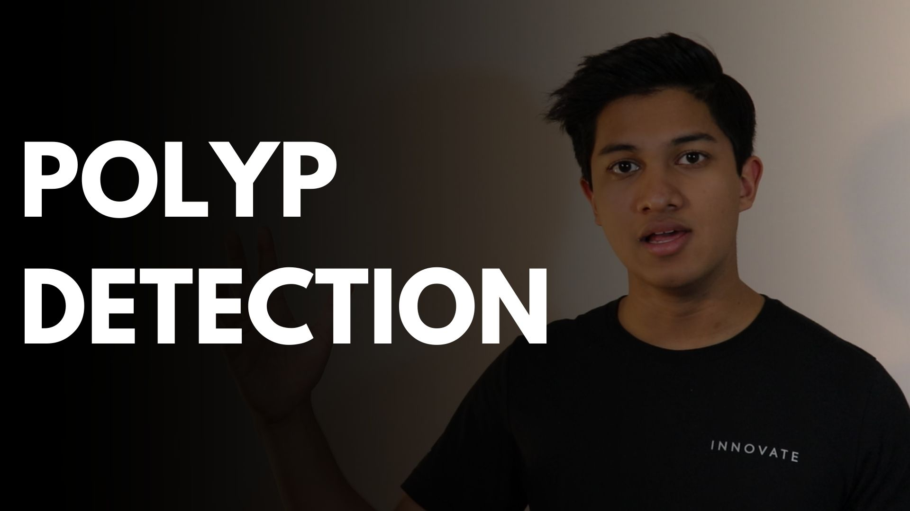
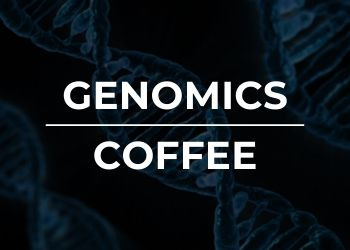
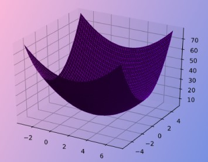
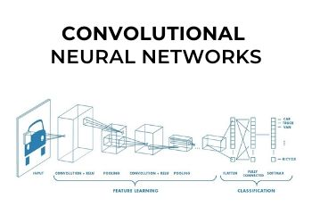
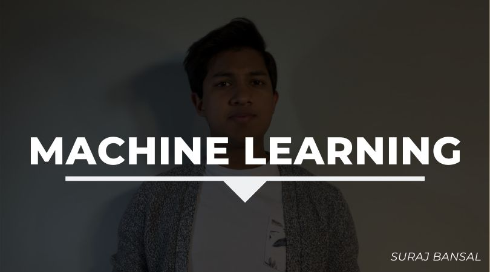
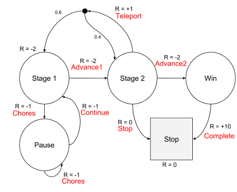

MY ARTICLES AND VIDEOS

Suraj Bansal
9-Minute WatchPolyp Detection with Convolutional Neural Networks Explained
Artificial Intelligence

Suraj Bansal
6-Minute ReadBREAKING NEWS: CRISPR Cas-9 Cures 16 year old boy's caffeine addiction
Genomics

Suraj Bansal
10-Minute ReadGradient Descent- Exploring the Math and Intuition
Artificial IntelligenceSuraj Bansal
9-Minute ReadRL Explained- Reinforcing Mathematical and Intuitive Concepts
Artificial IntelligenceSuraj Bansal
9-Minute ReadRevolutionizing Polypectomies with Convolutional Neural Networks
Artificial Intelligence

Suraj Bansal
7-Minute ReadConvolutional Neural Networks and Image Explained
Artificial Intelligence

Suraj Bansal
7-Minute WatchIntroduction to Machine Learning Algorithms
Artificial Intelligence

Suraj Bansal
7-Minute ReadMarkovs Decision Processes- Math and Theorems
Artificial Intelligence